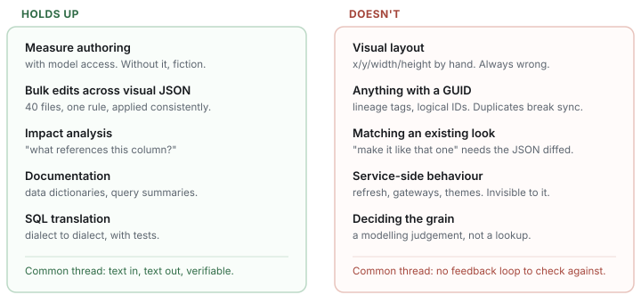

Field notes / Agentic workflows
What AI agents are actually good and bad at in a Power BI repo
A year in. Some of it stuck, a lot of it didn't, and the split isn't where I expected.
Power BI stopped being a binary format problem the day PBIP and TMDL became usable. Once your report and model are plain text on disk, everything that makes source control work starts working — diffs, branches, code review. And once it's text, a coding agent can read it.
I've been working that way for about a year now: a repo of .pbip projects and
.tmdl models, an agent with access to it, and a fairly stubborn refusal to accept
"it looks right" as a finish condition. Some of what I expected to work does. Several things I
assumed would be easy never worked once, and a couple of failures cost me a working day each.

What holds up
Measure authoring — but only with model access
This is the obvious one and it comes with a large asterisk. An agent writing DAX from the prompt alone produces plausible fiction: right shape, wrong column names, duplicating a measure you already have. Give it a way to read the model and the failure mode disappears almost entirely, because it stops guessing at names and starts looking them up.
I wrote about the mechanics of that separately — exposing a semantic model over MCP — but the short version is that model access is the difference between a suggestion and a usable measure. Without it I'd rather write the DAX myself.
Bulk edits across report JSON
This is where agentic work genuinely beats doing it by hand, and it's the use case I'd have ranked third or fourth going in.
A PBIR report is a tree of small JSON files — one per visual, roughly. "Apply this conditional formatting rule to every KPI card across all pages" means opening forty files and making the same nested edit in each. It's tedious, and tedium is where humans introduce inconsistency: you get thirty-eight right, two subtly different, and nobody notices until a user does.
An agent doing that is genuinely better than I am, because it doesn't get bored on file thirty. The reviewable artefact is the diff, and a diff across forty near-identical files is fast to scan — the anomalies stand out precisely because everything else is uniform.
Impact analysis
"If I rename this column, what breaks?" is a question with a real answer that takes twenty minutes to work out by hand across measures, calculated columns and report bindings. It's a graph walk over text. Agents are good at graph walks over text.
Documentation
Data dictionaries, query summaries, "what does this report actually pull" — all of it. The output is prose, prose is the thing these models are best at, and being slightly imperfect is survivable in a way that a wrong measure isn't. I built a small tool for the SQL half of this.
What never worked
Visual layout
Ask for a visual moved, resized or aligned and you get plausible-looking x,
y, width, height numbers that are wrong. Not
catastrophically — just off. Overlapping by twelve pixels, or eight pixels past the canvas edge
where it silently won't render in the service.
This is the clearest example of the feedback principle. The agent is writing coordinates it cannot see the result of. It's doing geometry blind, and there's no reason to expect that to work.
What fixed it wasn't better prompting, it was giving it something to check against: a validator that reads the report JSON and reports overlaps, off-canvas positions and broken field bindings. Once the agent can run that and see "visual 3 overlaps visual 7", it self-corrects. Same pattern as model access for DAX — close the loop and the failure mode goes away.
Anything involving a GUID
This one cost me a day, so it gets its own section.
PBIR objects carry identifiers — lineage tags on model objects, logical IDs that Fabric uses to match items during Git sync. When an agent generates new objects by copying an existing block as a template, it copies the identifier too. You now have duplicates.
Nothing fails immediately. The file is valid, Desktop opens it, and everything looks correct. Then Git sync refuses the workspace with an error that doesn't obviously point at duplicate IDs, and you spend a morning diffing before the penny drops.
I now treat every identifier field as something the agent must not invent or copy. Either it's generated fresh by a script, or it's left alone.
"Make this one look like that one"
Deceptively hard. Visual formatting in PBIR is deeply nested and inconsistently structured — two cards that look identical can have quite different JSON depending on which Desktop version created them and what was touched since.
Asking for a match in the abstract produces something approximate. What works is mechanical: diff the two JSON files, list the differences, apply them deliberately. That's a task with a verifiable answer, and framing it that way is the whole trick.
Anything that happens in the service
Refresh failures, gateway credentials, themes applying in Desktop but not on the web. The agent can see your files. It cannot see your tenant. It will confidently suggest the five most common internet answers, and the actual cause is usually a data source credential on a specific dataset.
I stopped asking. Faster to check the refresh history myself.
Deciding the grain
The most important call in a model — what does one row mean — is a judgement about the business, not a lookup. An agent will happily accept whatever grain the existing table implies and build on top of it, including when that grain is the bug. It has no reason to question the premise, and it won't.
I've written about one version of this: a table stacking monthly snapshots, every metric inflated, everything downstream technically correct and completely wrong. No agent catches that. Someone has to ask whether the table means what everyone assumes.
What actually made the difference
Looking at both columns, the pattern isn't task difficulty. Bulk-editing forty JSON files is objectively harder than nudging one visual twenty pixels. The difference is whether the agent can check its own work.
So most of what improved my results wasn't prompting technique. It was building feedback loops:
- Model access so DAX is written against real metadata rather than guesses.
- A report validator so layout and binding errors surface before publish.
- Version control on everything, so the diff is the review surface and a bad
change is one
git restoreaway. - Small, verifiable tasks. "Add this measure and run it" beats "improve this report" by a distance.
The guardrail I'd give up last is version control. Not because agents are reckless, but because knowing you can throw away an experiment for free changes what you're willing to try. Most of what I learned here came from attempts I later deleted.
Would I go back
No — but the honest framing isn't that it makes me faster at the same work. It changed which work is worth doing at all. Parsing four hundred queries into documentation was never going to happen by hand, so it simply didn't get done for years. Neither did auditing every report for broken field bindings.
Those aren't tasks that got quicker. They're tasks that moved from "not worth it" to "worth it", and that's a bigger change than speed.
Written from my own work on a PBIP/TMDL repository. Examples are generic — no employer reports, data or client identifiers appear here. The tooling ecosystem I work in includes Microsoft's Power BI Desktop developer mode, the Model Context Protocol, and community plugins for agentic Power BI development, all credited to their authors.